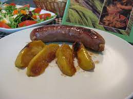
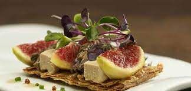
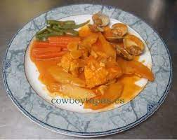
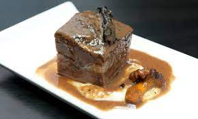
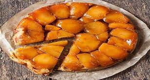

* * *
Aperitiu de benvinguda (Els dos tastets)
Xarrup de crema de carbasso amb formatge parmesa
i
Cirera farcida de botifarra dolca

Cava Espelt Escuturit Brut
* * *
Entrant
Coca amb foie, amanida de contrastos i fruites tropicals

Blanc Mareny 2014
* * *
Peix
Rap de Roses a l'all cremat, gamba i esparreces verds

Blanc Quinze Roures 2013
* * *
Carn
Melos de vedella de Girona al vi negre, prunes i timbal de patates panadera

Terres Negres 2012
* * *
Postres
Tarta tatin feta a casa, gelat de fruits secs i melmelada de figues

Vi dolc Airam
* * *
Aigua, pa, vins del cellar Espelt DO Emporda, cafe i xarrup inclosos
Preu: 32€ Tot inclos - Amb reserva previa(Places limitades) Telefon 972 54 40 32